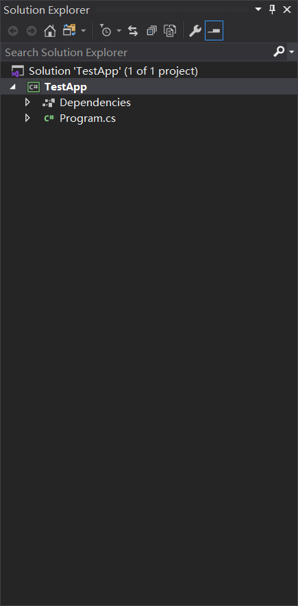
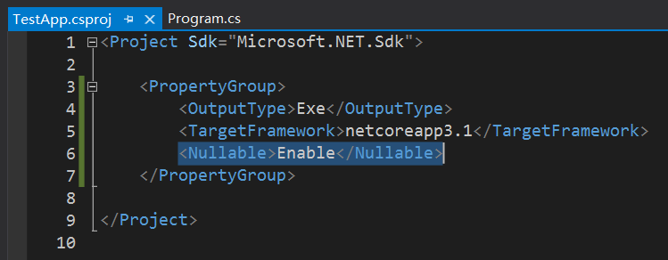
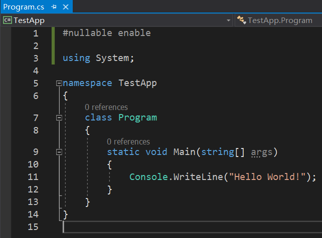
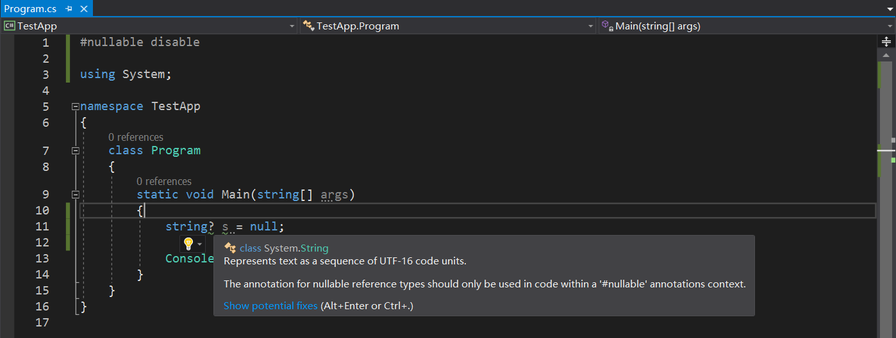
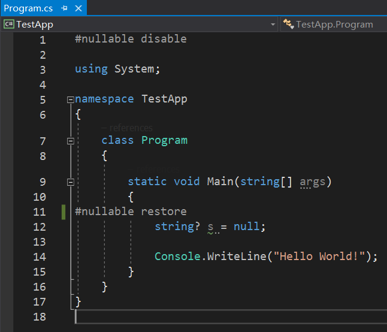

C# 8 里的可空引用类型
可空引用类型简介
在前文里，我们介绍过可空值类型 Nullable<T> 的相关内容，可以发现值类型是可以使用 Nullable<T> 使之为 null 的，不过引用类型基于指针这一点来说，肯定是需要 null 这种机制的。
不过……是的，你没有看错，从 C# 8 开始，引用类型也开始支持可空了。但是，引用类型不是一直都可以为 null 吗？它默认数值不就是为 null 吗？是的，但 C# 8 “暴力地”破坏了这一个要求，为了防止尽可能少出现 NullReferenceException 这种可怕的异常，我们产生了一个新的语法规则：强制引用类型不可空。然后如果非得让引用类型为空的话，请采用 T? 的写法，和值类型可空的写法一样，比如：
1 | string? s = null; |
可空引用类型（Nullable Reference Type）一般被简称为 NRT。
基本配置
启用这种特性需要额外的配置。这是因为，在 C# 8 之前，所有的引用类型的默认数值为 null，而 null 在今天的新特性里，不可空引用类型是不允许出现这个数值的，所以我们应当为其额外添加指定的内容，以保证编译器在编译代码期间能够分辨和查询到所有隐藏的 null 传递的错误。
现在，我们具有两种配置方式：项目的全局配置方式和文件配置方式。项目整体的配置可以作用于整个项目，而如果你只希望其中部分文件启用这个特性，则只需要在执行文件的最开头写上 #nullable enable 即可，这种配置方式是文件配置，稍后会详细介绍。
全局配置
但需要你注意的是，这种写法需要基于可空引用类型的环境。你需要先打开你的项目配置文件 .csproj，然后添加一项：<Nullable>Enable</Nullable> 即可使用这个特性。
例如，找到项目的解决方案资源管理器，并双击项目，如图所示：

然后修改即可。

文件配置
文件配置则不需要你打开项目文件，而是直接打开你需要启用的文件，然后在最开头输入 #nullable enable 即可：

另外，如果你针对于全局启用了不可空的选项的话，那么相反地，如果你需要禁用可空提示的话，请使用 #nullable disable 来禁用：

这样就可以看到，比如上文给出的禁用，就使得文件从禁用处往下的所有位置都会得到提示信息，大致内容说的是，你尝试在没有启用可空引用类型的特性的环境下去使用可空引用类型，这是不允许的。
当然，如果你需要重新加载和启用，则使用 #nullable restore 即可。

可以在文件配置这些预处理指令：
#nullable enable：启用文件对可空引用类型特性的支持。#nullable disable：禁用文件对可空引用类型的支持（如果支持的话）。如果不支持而使用它的话，则相当于啥也没写。#nullable restore：在全局启用的情况下使用该指令来重新启用（如果之前某处禁用了特性的话）。
它还可以在这三个预处理指令之后添加 annotations 和 warnings 两个预处理器关键字，来单独控制报错的对象是警告还是那个问号记号（比如 string? 里的 ?）。不过这一点用得比较少，所以就不再多说了。
语法
我们通过和可空值类型完全一样的语法 T? 来声明一个类型可空：
1 | string? s = null; // A string can be null. |
但请注意，可空引用类型仅仅是语法上看起来和可空值类型一样，但实际上，可空引用类型并没有类似于 Nullable<T> 的类型，它在运行时是和原本的类型完全一样的，只是从编译器层面约束和限制了我们无法赋 null 值的要求。说白了，string? 和 string 依旧用的是同一个数据类型，只是编译器在看到你的类型后带 ? 后会被判定为“可空”，于是这个类型你就可以放 null 进去；但没有这个符号，你就没办法赋 null 值，否则将会产生 CS86 系列警告。
那么，对应的一些语法，我们就得注意了：
! 后缀运算符
为了保证一些特定情况下，我们需要赋值不为空，但编译器依然认为你赋的是 null 值时，我们可以采用 ! 后缀运算符来强制编译器取消告警。
举一个例子，例如我们写了一个字符串转结构体的 Parse 方法，其中返回值是一个可空的类型，
1 | public sealed class Point |
然后，我在调用期间使用了这个方法：
1 | Point p = Point.Parse("(1, 3)"); |
此时，将会产生一个编译器警告，提示你转换后的结果可能是 null。客观来讲，这确实是对的，因为返回值是可空类型的，而我们用一个不可为空的类型接受这个可空类型时，显然范围变小了，确实需要报错。
但是，我们完全可以发现，这个转换是有效且正确的，因为我们的正则表达式转换出来的结果一定可以得到 X = 1 和 Y = 3 的结果，这是令人烦躁的，所以我们只需要在转换结果后添加一个感叹号 ! 来告诉编译器，这里的非空结果是预料之中的：
1 | Point p = Point.Parse("(1, 3)")!; |
但需要你注意的是，如果在此时我们使用 var 类型来表示 p 的话，这两个语句都会得到什么结果呢？
1 | var p = Point.Parse("(1, 3)"); // `p` is Point? type. |
你答对了吗？
!后缀运算符在 MSDN 里称为null 包容运算符（Null-forgiving Operator），而在 Visual Studio 2019 下，这个运算符称为null 警告禁用运算符（Null-suppress Operator）。
as 的默认值
在 is 和 as 一文中，我们提到了 as 的默认值。当引用类型时，转换无效时会返回 null。考虑如下情况。
1 | object o = new Point(1, 3); |
可以看到，第二句话里，我们尝试将我们认为的 o 转为 string 类型。但这是不可能的，因为 o 装的是一个 Point，所以 as 转换失败后会返回 null。但显然，string 后没有问号，所以并不可空。那么这里一定会出现编译器的警告。那么，这下怎么办呢？
如果我们能保证这个转换是成立的，我们应当使用 ! 后缀运算符来修饰结果，表示这个结果此时肯定不可空，是在我们预料之中的。但我们随时随地都可以加这个符号来取消警告。
1 | object o = new Point(1, 3); |
显然，这个转换是错误的，但我们确实取消了编译器的警告，那么，我们此时如果随意地使用这个 i，就会出现问题。比如我们取字符串的第 3 个字符：
1 | char c = i[2]; |
显然，这是会错的。所以，这产生了语义层面的 bug。我们应当尽量少使用 ! 符号，而更多用在正确的地方。而且，哪怕原本类型就是 string，编译器依然会报错。
1 | object o = "Hello"; |
这是因为编译器仅检查类型，它发现 o 是 object 时，就不会再往下查看具体 o 装的是什么类型的数据了，于是在使用 as 转换时，完全可能产生 null 结果，所以报错。此时我们不得不使用 ! 后缀运算符：
1 | object o = "Hello"; |
但请注意，刚才说过，如果这里使用 var 来表示类型的话，如果不加 ! 后缀运算符，将会被识别为 string? 而不是 string。
使用特性来减少 ! 后缀运算符的使用
前文说过，! 的用法是认为决定的，所以这完全取决于人的使用方式，故我们无法做到编译器层面的完全禁止。而有一些情况，我们完全可以不去使用它们，以此让编译器为我们产生错误信息，来更好地约束我们的代码思维。此时，我们需要用到如下的一些特性。
NotNullWhenAttribute
考虑如下 API。我们把刚才的 Point 类的 Parse 方法转换为 TryParse 方法，让它返回 bool 数值，而结果从参数返回。那么
1 | public static bool Parse(string str, out Point? result) |
我们只需要变化一点点内容即可。
现在，新的问题来了。我们调用的方式是
1 | Point p; |
这样显然是不会有问题的，首先，返回为 true 时，意味着 result 此时肯定不为 null，所以可以安全赋值过去，但编译器由于发现 result 是 Point? 的，所以会报错。于是此时我们不得不使用 !。
1 | Point p; |
这样是没有错误的。但我们发现，这种写法是受到返回值的约束。当返回值为 true，这个 out 参数肯定是不为空的。所以我们可以把 API 改变一下。
1 | public static bool Parse( |
我们在第二个参数前面加上特性：[NotNullWhen(returnValue: true)]，那么这个 result 在编译器层面就会认为，当返回值为 true 时，这个参数值一定不会为空。所以，我们一旦用了这个模式书写代码，那么调用方就不用写 ! 了：
1 | Point p; |
可见，这个特性用于保证输出的数据信息。如果你把它拿来用到赋值的上面，那么这个特性将会什么用都没有。
AllowNullAttribute 和 DisallowNullAttribute
下面我们来看另外一个特性。这个特性表示我们给的数值是允许为 null 的。它一般用在属性的 setter，或参数上。
1 | public string Name |
这样的话，这个 setter 原本应该赋值为 string 的，但编译器此时允许你为其赋 null 进去。
当然了，DisallowNull 就是反过来的，不为 null。
这个特性也用来保证输入的数据信息可空或不可空。如果你把它用在返回值上，它将什么效果都没有，因为它保证的是输入，而非输出。
MaybeNullAttribute
思考一下，当我们使用一个泛型是很普通的类型时，如果它为 null 了怎么办？
1 | public static T FirstOrDefault<T>(this IEnumerable<T> source, Precicate<T> predicate) |
比如这个例子，它是 Linq 代码里的一个部分。这个方法是用于查找一个类型为 T 的集合 source 里，第一个满足 predicate 给定条件的项。当找到结果后，返回值为这个值；但没有找到结果的时候，返回值将为这个类型的默认值：值类型则是对应的默认结果，而引用类型则默认为 null。
按道理来讲，这里返回值就应当为可空的类型，所以我们应该设为 T? 类似的写法，来强制规定返回值可空。但很遗憾的是，这么做编译器会报错。这个编译器报错的大概意思是：“由于值类型和引用类型的行为不同，我们无法设置这一要求，请设置约束来规定这个泛型参数 T 是值类型还是引用类型”。
编译器的说法是有道理的。因为我们的值类型和引用类型的行为不同，值类型的可空，是将其翻译为另外一个类型 Nullable<T>，而引用类型则完全没有变化类型，只是告诉编译器它可空而已。如果我们“妄自”添加问号在类型上面的话，值类型和引用类型的处理方式都不同，那么后续交给程序，它并不知道这个类型此时是值类型还是引用类型，那后续有应该该怎么做呢？这是很复杂的一个问题。所以，我们临时给出的解决方案是，为这个返回值添加一个特性：MaybeNullAttribute 来表示这个返回值是可空的：
1 | [] |
这样的话，编译器就能明白，此处的这个泛型返回值对应的类型，会依据值类型和引用类型分情况处理。引用类型下，就会产生警告。实际上，这个方法调用的是另外一个方法：TryGetFirst。它的源代码我也复制出来。
1 | [] |
希望你能感受一下，这个特性在代码里起到的作用。
这个特性用来保证输出的数值是可能为空的。
NotNullAttribute
下面来介绍一个用法和刚才这个差不多的特性。这个特性一般用在 ref 参数上，表示参数在传参时不可以赋值为 null，虽然它此时是可以为 null 的类型。
在 .NET 提供的数据结构的代码里，某个数据结构需要进行扩容，此时为了保证容量，会调用下面这样的代码：
1 | // Messages has the default value (null) when EnsureCapacity is called: |
如果原本是一个数组的话，我们可以为 API 设计为这样：
1 | public void EnsureCapacity<T>([NotNull] ref T[]? storage, int size) |
此时来告诉编译器，在传参时，是不允许为 null 赋值过去的，但最后 storage 可以为 null，并是否为 null 将在 API 设计的代码里决定，而不是外界。
这个特性用来保证输出类型的结果是不可空的，比如把它放在返回值上。
NotNullIfNotNullAttribute
最后一个特性是最鬼畜的特性。这个特性其实和 NotNullWhenAttribute 的用法非常相似，只是有一点区别：NotNullWhenAttribute 依赖于返回值来决定是否为空，而这里说的这个特性，依赖于其它参数。其中参数是什么，那么它的可空性和返回值的可空性是一样的。
考虑如下代码。我们假设要写一个 DNS 解析的服务。我们需要返回一个根域名服务器的地址，用字符串表示，而参数表示当前主机的地址。但如果参数为空，显然返回值就应为空，因为主机都没有，那么对应的根域名服务器肯定也就为空了，返回值此时的可空行为是和参数 url 是一样的，所以我们为返回值设定 NotNullIfNotNullAttribute 特性，来告诉编译器，返回值在参数 url 不为空的时候不为空。
1 | [] |
虽然有点绕，但意思应该是清晰的。
很明显，这个也是用作输出的。
总结
前文给出了很多有关可空特性的支持，来更加严谨地保证可空的情况，以减少使用 null 禁用运算符 !。除了 AllowNull 和 DisallowNull 外，所有的特性都用作输出；而只有它俩用作输入。
关于泛型的可空性
在前文我们提到了泛型的可空性。由于值类型和引用类型的可空行为不同，所以我们恐怕无法单纯添加一个问号就解决这一点。在 MSDN 的原文里，原文是这么说的：
Correctly communicating the null state of generic types and generic methods requires special care. This stems from the fact that a nullable value type and a nullable reference type are fundamentally different. An
int?is a synonym forNullable<int>, whereasstring?isstringwith an attribute added by the compiler. The result is that the compiler can’t generate correct code forT?without knowing ifTis aclassor astruct.This doesn’t mean you can’t use a nullable type (either value type or reference type) as the type argument for a closed generic type. Both
ListandListare valid instantiations ofList.What it does mean is that you can’t use
T?in a generic class or method declaration without constraints. For example, Enumerable.FirstOrDefault(IEnumerable) won’t be changed to returnT?. You can overcome this limitation by adding either thestructorclassconstraint. With either of those constraints, the compiler knows how to generate code for bothTandT?.You may want to restrict the types used for a generic type argument to be non-nullable types. You can do that by adding the
notnullconstraint on that type argument. When that constraint is applied, the type argument must not be a nullable type.
我把这段话大致翻译了一下，我希望你能看懂中文。:P
对于一个泛型类型和泛型方法的 null 的状态的正确处理是我们肯定会关心的地方。这个“梗”的诞生源于值类型和引用类型处理的方式完全不同。一个
int?类型被翻译转为Nullable<int>，但string?在编译器层面仅仅是添加了一个特性标记来标注它是个可空的string类型而已，因此类型并没发生变化。所以，编译器根本不可能在它本身并不知道T是一个值类型还是引用类型之前，就生成完全正确的代码。但这并不意味着，我们不能在一个闭合的泛型类型参数上使用可空类型了（这里的可空类型指的是值类型或引用类型的两种可空情况的其一）。换句话说，
List<string?>和List<int?>在初始化List<T>集合的时候，都是完全被允许的。但是，我们也确实无法在没有任何泛型约束的状态下指定一个泛型类或泛型方法的泛型参数
T上随意指定它可空（即T?）。比如，Enumerable.FirstOrDefault(IEnumerable)（上文里我们才看过的那个代码）就不可能允许直接返回一个T?。但你完全可以克服这一点限制，通过为泛型参数添加一个值类型或引用类型的约束（写法是where T : struct或where T : class），这样的话，编译器就肯定知道，接下来泛型类型T应如何去处理这个可空情况，即T?了。你可能会想去限制某处的泛型参数不要为可空的类型，而且值类型和引用类型都可能。现在我们提供了一个泛型约束关键字
notnull来表示这种特殊情况，只要我们为其设置where T : notnull泛型约束，那么此时的T就一定是一个不可以为空的类型了，而且值类型或引用类型均是允许的，只要它们不可空。
结束语
很抱歉，这篇文章太长了。但我希望你能明白，可空值类型和可空引用类型的真正使用方式和操作，我可不希望你用错了。